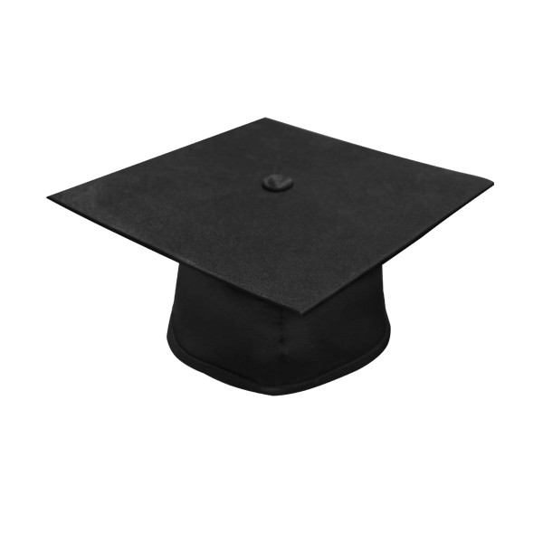

Summary: Passionate, quick learner with technology and networking skills and the ability to communicate well within a team, striving to reach goals while constantly gaining knowledge and applying that knowledge wherever possible.
Education:Associates of Applied Science Degree (Completed 2020)
Bachelor's in Information Technology and Management (Expected 2022)
Computer Technician Certificate (Completed 2018)
Computer Support Associate (Completed 2018)
High School Diploma (Completed 2018)
Polish School (Completed 2017)
Accomplishments:Special Recognition for completion of Polish School Matura. Certificate for membership in the Phi Theta Kappa Honor Society. High Honor Roll Student in High School.
Certifications:Computer Support Associate Certificate, Computer Technician Certificate
Affiliations:Phi Theta Kappa Honor Society
Languages:Fluent in English and Polish
Skills:Computer Repair, Operating System installation and configuration, Computer Troubleshooting, Install, configure, maintain devices and PC's, Quick learner, Communicating with a team.
